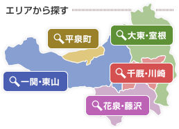
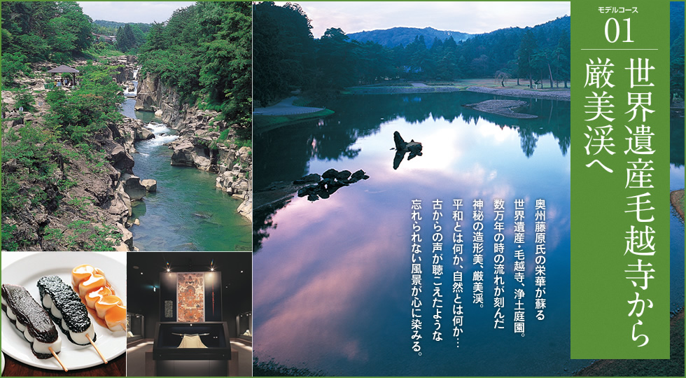
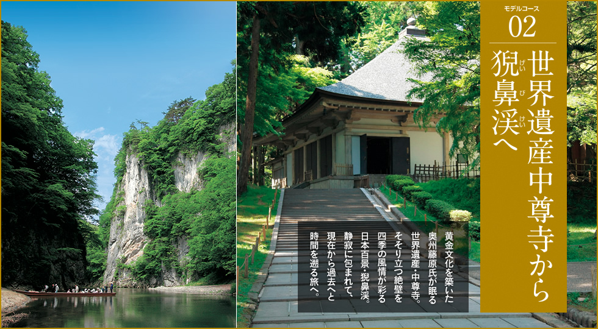
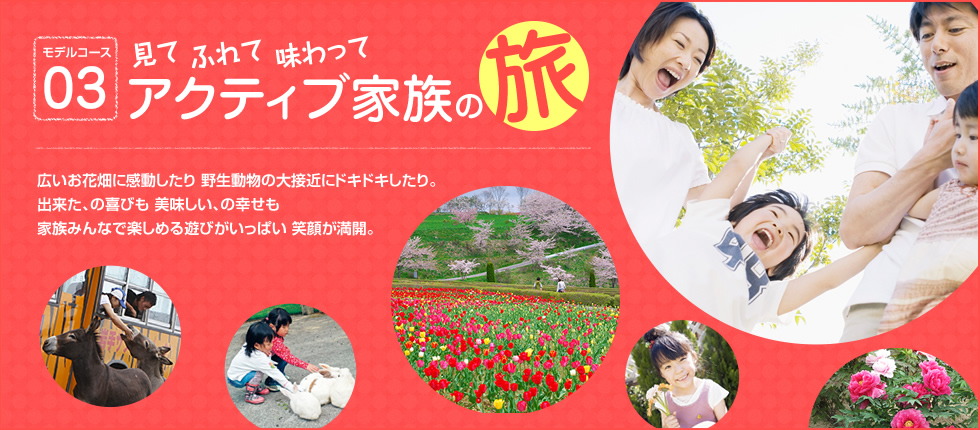
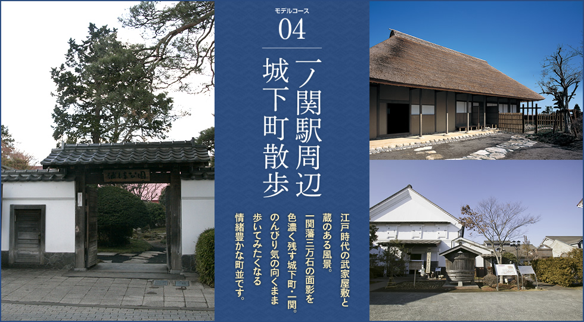

みんな！！一関においでよ♫
ここでは内装のサンプルページを作る予定でしたが、同じようなサンプルページを幾つも作っても面白くない！
ですので、ささやかなお遊びとして、我が町一関の観光をPRする事にしましたｗ
|  | オススメの観光コースをこの場を借りてご紹介・・・（テヘペロ） （許可を得ているわけではないですが、観光に一役買っているという事でｗ） |
|---|
| 画像リンク | オレ的おすすめポイント |
|---|---|
|  | 一関では有名な観光地『現美渓』とお隣の平泉『毛越寺』を楽しめるコース。現美渓は渓流としての美観も良いですが、おすすめの時期はズバリ春！春に行くと桜と相まって美観が数倍増します！ |
|  | 一関には紛らわしい名前ですが『現美渓（げんびけい）』と『猊鼻渓（げいびけい）』と２つの渓流スポットがあるのです（笑） |
|  | 花と牧場、牛と戯れるならこのコース。 |
|  | 江戸時代の武家屋敷から始まってグルメに歩くならこのコース。 |